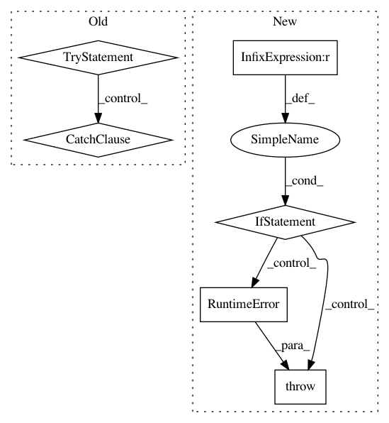

3c4d7d9a576fd29029975e16b34900fcded78c02,stellargraph/core/schema.py,GraphSchema,get_edge_type,#GraphSchema#Any#Any#,191
Before Change
A node type triple or index.
// TODO: remove "get_" from the name
try:
if edge in self.edge_type_map:
et = self.edge_type_map[edge]
edge_type = et if index else self.edge_types[et]
elif not self.is_directed():
et = self.edge_type_map[(edge[1], edge[0], edge[2])]
if index:
edge_type = et
else:
et = self.edge_types[et]
edge_type = EdgeType(et[2], et[1], et[0])
else:
raise IndexError
except IndexError:
print("Warning: Edge "{}" not found in type map.".format(edge))
edge_type = None
return edge_type
def sampling_tree(self, head_node_types, n_hops):
After Change
A node type triple or index.
// TODO: deprecate this function
if self.edge_type_map is None:
raise RuntimeError("Edge type maps must be created to use this method")
if edge in self.edge_type_map:
et = self.edge_type_map[edge]
edge_type = et if index else self.edge_types[et]
In pattern: SUPERPATTERN
Frequency: 3
Non-data size: 6
Instances
Project Name: stellargraph/stellargraph
Commit Name: 3c4d7d9a576fd29029975e16b34900fcded78c02
Time: 2018-12-19
Author: andrew.docherty@data61.csiro.au
File Name: stellargraph/core/schema.py
Class Name: GraphSchema
Method Name: get_edge_type
Project Name: tensorflow/transform
Commit Name: 6c83b47904619bcd2bbb0be73bd76e11598a755a
Time: 2017-11-30
Author: tf-transform-dev@google.com
File Name: tensorflow_transform/beam/impl.py
Class Name:
Method Name: _assert_tensorflow_version
Project Name: stellargraph/stellargraph
Commit Name: 3c4d7d9a576fd29029975e16b34900fcded78c02
Time: 2018-12-19
Author: andrew.docherty@data61.csiro.au
File Name: stellargraph/core/schema.py
Class Name: GraphSchema
Method Name: is_of_edge_type